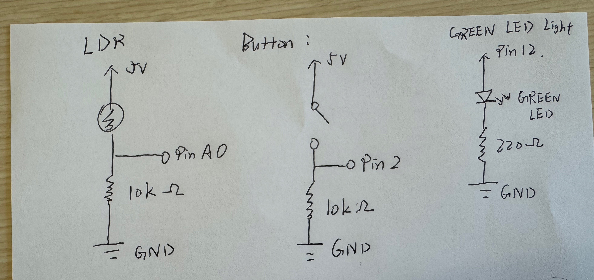
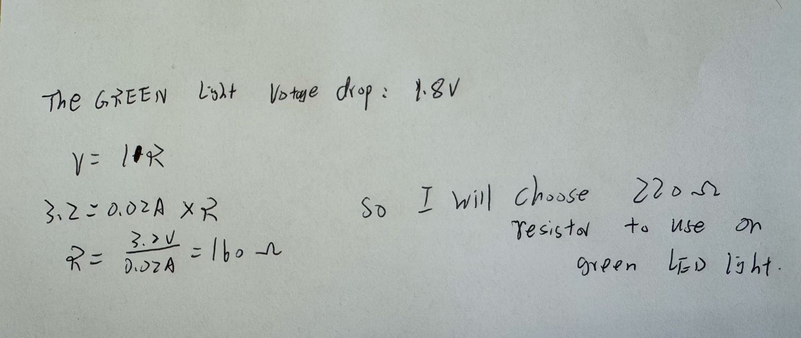
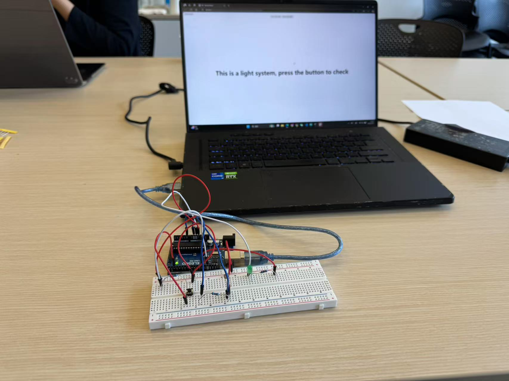
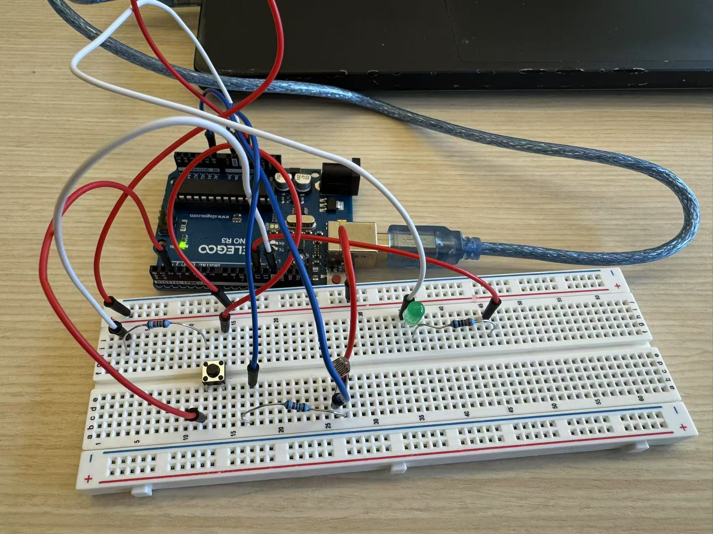

This is my circuit's operation

The button is for check the system is good or not, if I didnt press the screen will show the white, when I press will show the green tell u the system is good!
Here is all the documentation for assignment 6!
This is my schematic
I use a button, a LDR resistor, and also a Green led light.
Because the green light have 1.8v drop, so use the equation v = I*R to get at least 160 ohm resistor so I choose the 220 ohm, and also for the LDR and button both use 10k ohm be the resistor, because the resistor must be large enough to avoid significant current flow when the brightness or button status is changed, so I choose 10k ohm be the resistor
This is my circuit
 Button connect to pin2, for check the system good or not, and the LDR connect to Pin A0 for feel the brightness to check is day time or night, and Green light connect to Pin12 will contorled by the laptop turn on or turn off button
This is my firmware 1(index.js)
const BAUD_RATE = 9600; // This should match the baud rate in your Arduino sketch
let port, connectBtn; // Declare global variables
function setup() {
setupSerial(); // Run our serial setup function (below)
// Create a canvas that is the size of our browser window.
// windowWidth and windowHeight are p5 variables
createCanvas(windowWidth, windowHeight);
// p5 text settings. BOLD and CENTER are constants provided by p5.
// See the "Typography" section in the p5 reference: https://p5js.org/reference/
textFont("system-ui", 50);
textStyle(BOLD);
textAlign(CENTER, CENTER);
}
function draw() {
const portIsOpen = checkPort(); // Check if serial port is open
if (!portIsOpen) return; // If not, exit draw loop
let str = port.readUntil("\n"); // Read data from Arduino
if (str.length == 0) return; // If nothing received, return
let values = str.trim().split(","); // Split incoming data
if (values.length < 2) return; // Ensure both button and LDR values exist
const buttonState = Number(values[0]); // Get button state (0 or 1)
const ldrValue = Number(values[1]); // Get LDR value (0-1023)
// Handle button press display
if (buttonState === 0) {
background("white");
fill("black");
text("This is a light system, press the button to check", windowWidth / 2, windowHeight / 2);
} else if (buttonState === 1) {
background("green");
fill("white");
text("Nice! The system is still good!", windowWidth / 2, windowHeight / 2);
}
// Handle LDR darkness detection
if (ldrValue < 900) { // Adjust threshold based on testing
background("black");
fill("white");
text("Now it's night", windowWidth / 2, windowHeight / 2);
}
}
function setupSerial() {
port = createSerial();
// Check to see if there are any ports we have used previously
let usedPorts = usedSerialPorts();
if (usedPorts.length > 0) {
// If there are ports we've used, open the first one
port.open(usedPorts[0], BAUD_RATE);
}
// Create a connect button
connectBtn = createButton("Connect to Arduino");
connectBtn.position(5, 5); // Position the button in the top left of the screen.
connectBtn.mouseClicked(onConnectButtonClicked); // Run when clicked
// Create "Light On" button
document.getElementById("ledOn").addEventListener("click", () => sendCommand("LED_ON"));
document.getElementById("ledOff").addEventListener("click", () => sendCommand("LED_OFF"));
}
function checkPort() {
if (!port.opened()) {
// If the port is not open, change button text
connectBtn.html("Connect to Arduino");
// Set background to gray
background("gray");
return false;
} else {
// Otherwise we are connected
connectBtn.html("Disconnect");
return true;
}
}
function onConnectButtonClicked() {
// When the connect button is clicked
if (!port.opened()) {
// If the port is not opened, we open it
port.open(BAUD_RATE);
} else {
// Otherwise, we close it!
port.close();
}
}
function sendCommand(command) {
console.log("Sending: " + command);
if (port.opened()) {
port.write(command + "\n"); // Send command to Arduino
} else {
console.log("Serial Port is not open!");
}
}
This is my firmware 2 (sketch.ino)
const int BUTTON_PIN = 2; // Button
const int LDR_PIN = A0; // LDR
const int LED_PIN = 12; // Green LED
// Set up for button sensor and light
void setup()
{
Serial.begin(9600);
pinMode(BUTTON_PIN, INPUT);
pinMode(LED_PIN, OUTPUT);
}
void loop()
{
int buttonState = digitalRead(BUTTON_PIN);
int ldrValue = analogRead(LDR_PIN);
// Send button state and LDR value
Serial.print(buttonState);
Serial.print(",");
Serial.println(ldrValue);
// Check for serial commands
if (Serial.available() > 0) {
String input = Serial.readStringUntil('\n');
input.trim();
if (input == "LED_ON") {
digitalWrite(LED_PIN, HIGH); // Turn LED ON
Serial.println("LED ON");
}
else if (input == "LED_OFF") {
digitalWrite(LED_PIN, LOW); // Turn LED OFF
Serial.println("LED OFF");
}
}
delay(50);
}
This is my circuit's operation
The button is for check the system is good or not, if I didnt press the screen will show the white, when I press will show the green tell u the system is good!
This is my circuit's operation

The LDR is simulate the real day change, when I use my finger to cover the LDR and the brightness will decrese and the screen will be dark and tell u its night now
This is my circuit's operation

Sorry for the bad UI design, want to easier check the gif(make the chrome page size smaller). for this gif, I can use the laptop light on, and light off button to turn on the light or off